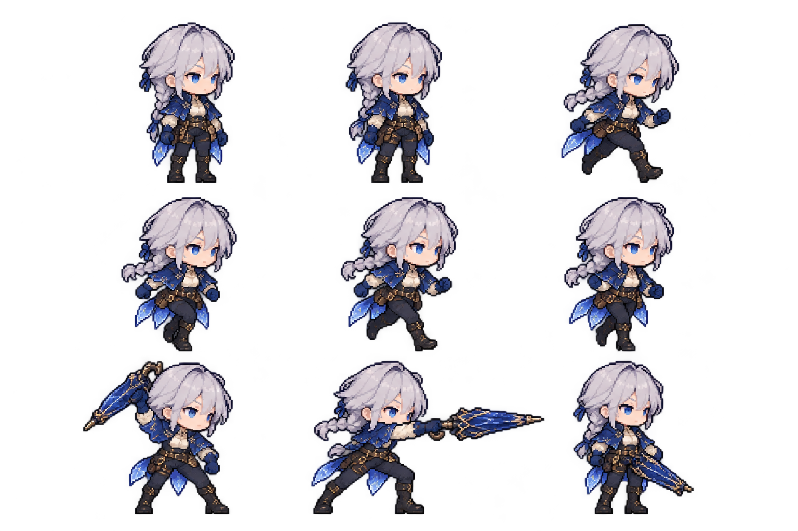
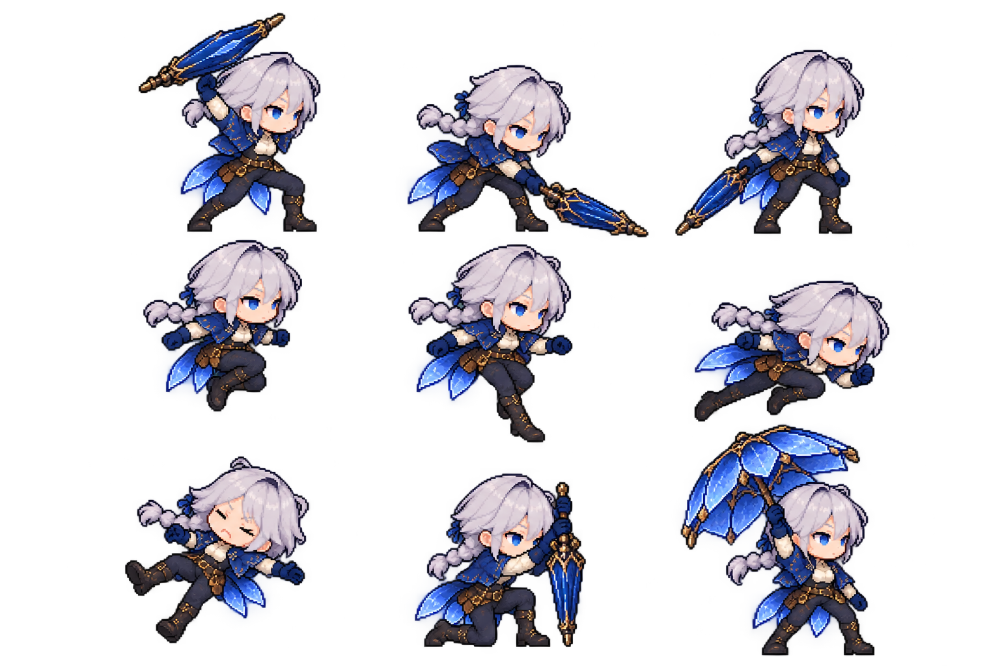
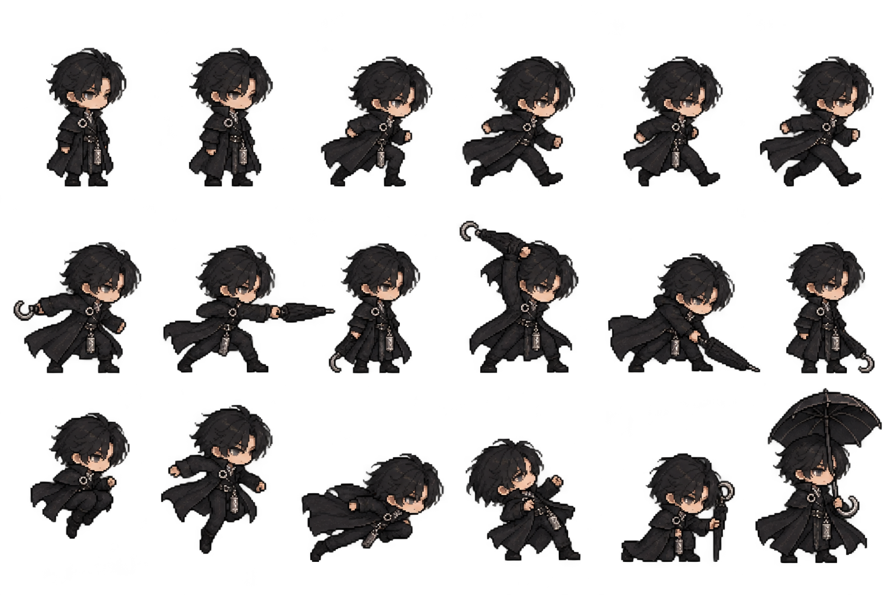
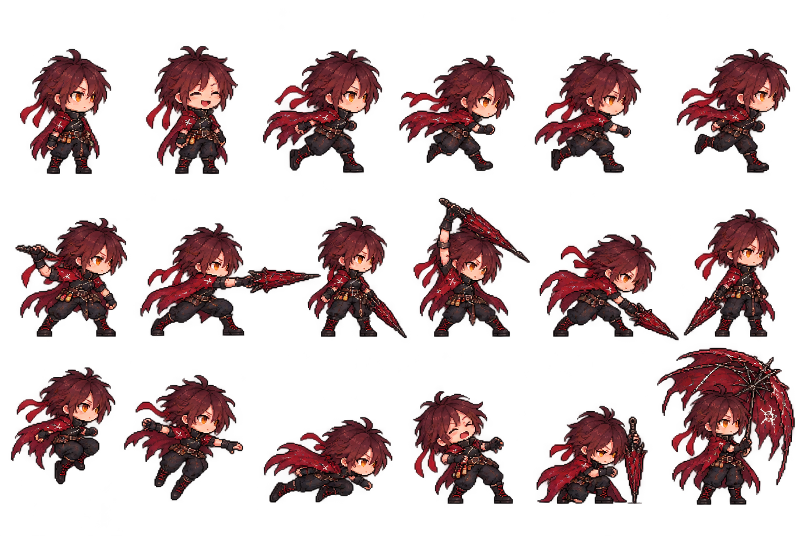

SPRITE WORKSHOP / PROTOTYPE 01
대기 2프레임 · 달리기 4프레임 · 약공격 3프레임. 세 동료의 강공격·점프·대시·피격·스킬 9종과 궤적. 각 원화의 PIXEL STUDY 복장을 기준으로 제작한 시안입니다.
세 동료의 기본 동작과 강공격·점프·대시·피격·각자 스킬 3종을 확인합니다. 파란 구간은 타격/발동 시점입니다. 게임의 스킬은 기존 레벨·해금·쿨타임 규칙을 따릅니다. 방어·방어 성공·탈진 자세도 선택할 수 있습니다. 게임 테스트의 배경과 잔향·보스는 픽셀 타일/도형으로 표시됩니다.

PNG 내려받기

